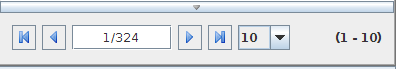

In this example we're going to paginate over a list of countries, using the pagination panel, and a JList.The View
package plugintesterimport java.awt.BorderLayout.*application(title: 'PluginTester',
preferredSize: [320, 240],
pack: true,
//location: [50,50],
locationByPlatform:true,
iconImage: imageIcon('/griffon-icon-48x48.png').image,
iconImages: [imageIcon('/griffon-icon-48x48.png').image,
imageIcon('/griffon-icon-32x32.png').image,
imageIcon('/griffon-icon-16x16.png').image]) {
borderLayout()
list(id:'countryList',constraints:CENTER)
paginationPanel(
id:'pagination',
enabled:true,
constraints: SOUTH
)
}The Controller
package plugintesterimport javax.swing.DefaultListModel
import org.viewaframework.swing.pagination.PaginationListenerclass PaginationPanelController { def model
def view
List<String> countries = Arrays.asList(
"Spain","Mexico","USA","Canada","France","UK","Belgium","Germany",
"Netherlands","Switzerland","Denmark","Sweden","Finland","Norway",
"Italy","Austria","Iceland","Poland"
) void mvcGroupInit(Map args) {
/* Initializing JList component with a DefaultListModel. I'm aware
* it may be another way to do this with bindings */
view.countryList.model = new DefaultListModel()
countries[0..3].each{country->
edt{
view.countryList.model.addElement(country)
}
}
/* Initializing the pagination information and adding a listener
* to the pagination. In next releases will be possible to add a
* closure directly at the paginationPanel() node. */
view.pagination.with{
paginationStatus.totalResults = countries.size()
paginationStatus.offset = 1
paginationStatus.maxResults = 3
addPaginationListener({evt-> paginate evt} as PaginationListener)
}
} /* Here we paginate over the entries on the list */
def paginate = {evt->
/* The evt instance is one of PaginationEvent */
edt{
evt.paginationStatus.with{
/* Every time we paginate we just clean up the list */
view.countryList.model.clear()
/* And add the selected entries by the pagination event */
countries.subList(
firstRecordInPage,
lastRecordInPage).each{c->
/* The chosen ones are added to the list component */
view.countryList.model.addElement(c)
}
}
}
}
}
There is an issue ID: 3427885 in Viewa, in which the lastRecordInPage property is calculated badly when the
number of results per page is greater than the total results. It may cause a IndexArrayOutOfBound if you do not
check the indexes.
When the MVC group is initialized, then the list is populated and the pagination panel is set up. The most important property
in the paginationPanel is the paginationStatus object which is the object handling the pagination info. Besides setting up
the paginationStatus instance you also have to add a paginationListener in order to handle the pagination over the entries. Here
we've dispatched the pagination behavior to the paginate method inside the controller.Right now if you use the navigationPanel outside a MasterViewPanel you have to do this hack (casting the closure the PaginationListener type),
but in next release I'll change it to enable it to receive just a closure.Every pagination listener receives a PaginationEvent as parameter. That event has an updated PaginationStatus instance. As you see
we've used the paginationStatus instance for getting the start index and the end index of the current page (firstRecordInPage,lastRecordInPage properties).